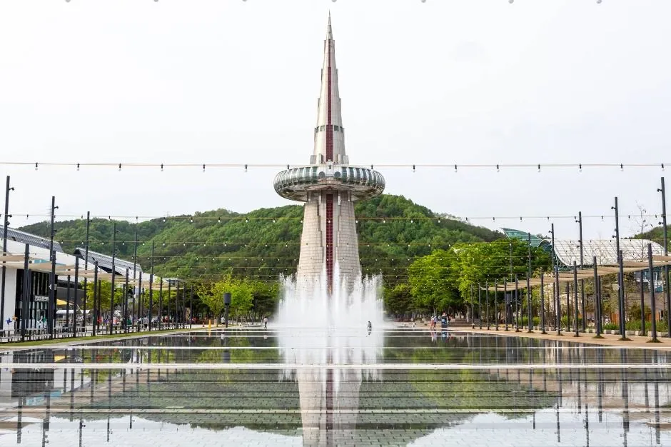
▲ 엑스포과학공원 한빛탑과 물빛광장 (평상시 촬영, 빵축제 행사 사진 아님) 사진=한국관광공사
"빵은 오후 1시부터인데, 차는 어디에 대지?" 2026 대전 빵축제는 10월 17~18일 이틀간 유성구 엑스포과학공원 한빛탑 일원에서 열린다. 작년까지 대전역 일대(소제동 카페거리·대동천)에서 열리던 행사가 올해 엑스포과학공원으로 자리를 옮기면서, 자가용 방문객은 주차장과 도로 사정을 먼저 따져봐야 하는 처지가 됐다. 이 글은 빵집 라인업보다 주차·접근·대기 전략에 초점을 맞췄다. 은행동 성심당 본점 주변 주차는 성심당 본점 주차 경유지 가이드에서 따로 다뤘다.
행사 개요는 보도 내용(국제뉴스·코리아데일리·CBC뉴스·경향신문 등)을 교차 확인했고, 주차 요금은 대전관광공사 엑스포과학공원 안내 페이지를 기준으로 했다. 10월 1일 기준 대전관광공사 공지사항 게시판과 보도 어디에서도 축제 전용 임시주차장·셔틀·교통통제 공지는 확인되지 않았다. 장소 이전 사유·주말 운영시간·주변 주차장 요금처럼 공식 자료로 확인된 항목은 출처를 달아 확정으로 적었고, 끝까지 확인 못 한 항목과 추정은 본문에 그대로 표시했다.
1. "17일간 40억"은 올해 얘기가 아니다 — 대전 빵축제 일정부터 정확히
대전 빵축제 관련 기사를 검색하면 "40억 투입 17일간 열릴 대빵축제"라는 제목이 눈에 띈다. 그런데 CBC뉴스 본문을 확인하면, 이는 내년(2027년) 확대 계획이다. 대전시는 행사명을 '대빵축제'로 바꾸고 기간을 이틀에서 10월 1~17일(17일간)로 늘리는 방안을 검토 중이며, 예산도 약 4억 원대에서 약 40억 원(시비 30억·관광공사 10억)으로 늘리는 구상이다. 같은 기사는 2027년 예산과 일정이 시의회 예산 심의에 따라 바뀔 수 있다고 전했다. 올해 행사 예산은 CBC뉴스 기준 4.5억 원, 코리아데일리는 "약 4억 원"으로 보도했다.
| 항목 | 내용 |
|---|---|
| 기간 | 2026년 10월 17일(토)~18일(일), 이틀 |
| 시간 | 매일 13:00~21:00 (오전 개장 아님) |
| 장소 | 엑스포과학공원 한빛탑 일원, 대전 유성구 대덕대로 480 |
| 입장료 | 무료 (빵 구매는 유료) |
| 참여 빵집 | 120곳 (A존 30·B존 20·C존 30·D존 16·E존 24 — 위키트리 기준). 작년은 대전관광공사 공식 소개 기준 102곳(2024년 81곳)이며, 코리아데일리는 105곳으로 보도했다 |
| 주최·주관 | 대전광역시 후원, 대전관광공사 주최·주관 (위키트리 보도) |
| 작년 방문객 | 약 16만 8천 명 (코리아데일리 보도, 한국일보도 대전시 설명을 인용해 같은 수치와 2021년 약 1만 5천 명을 전했다) |
| 예산 | 올해 약 4~4.5억 원(매체별 상이) / 내년 확대 구상 약 40억 원 |
부대행사의 기간도 혼동하기 쉽다. 코리아데일리·더쎈뉴스 등에 따르면 빵시투어(시티투어 버스)는 매주 토·일 운영되고, 축제 당일에는 엑스포과학공원이 임시로 코스에 추가된다. '꿈돌이의 대전 빵 탐험대' 미션투어는 10월부터 두 달간, 관광시설 할인 기획전은 10월 빵축제 기간까지, 숙박 할인은 11월 8일까지(대한민국 숙박세일 페스타 하반기편)로 안내됐다. 즉 본행사는 이틀이고, 나머지는 연계 프로그램이다.
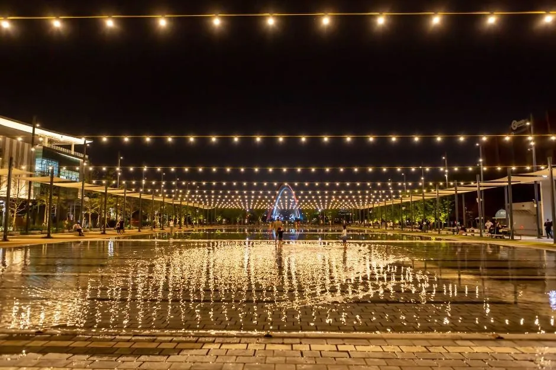
▲ 줄 조명이 걸린 엑스포과학공원 광장의 야간 모습 (평상시 촬영, 빵축제 행사 사진 아님) 사진=한국관광공사
| 항목 | 2025년 | 2026년 |
|---|---|---|
| 기간 | 10월 18일(토)~19일(일) | 10월 17일(토)~18일(일) |
| 운영 시간 | 12:00~20:30 (개막식 18일 17:00) | 13:00~21:00 |
| 장소 | 동구 소제동 카페거리·대동천 일원 — 대전역에서 도보 5분 | 유성구 엑스포과학공원 한빛탑 일원 — 도보 접근 불가, 순환버스·환승 필요 |
| 참여 빵집 | 102곳(대전관광공사는 '올해로 4회째'로 소개) | 120곳 (회차는 공식 표기 확인 못 함) |
| 교통 안내 | "행사장 일대가 매우 혼잡할 것으로 예상, 대중교통 이용 권장" | 같은 취지로 대중교통 권장(국제뉴스 보도) |
두 해 모두 행사 측은 대중교통을 권했지만 무게가 다르다. 작년에는 KTX 대전역에서 걸어서 닿는 위치였고, 올해는 차를 두고 오더라도 환승이나 순환버스 한 번이 더 필요하다. 반대로 자가용 방문객에게는 대전역 일대의 이면도로 주차 경쟁 대신 대형 공원 주차장이 선택지로 생겼다는 점이 달라졌다(이 비교는 필자의 해석이다).
2. 올해는 왜 엑스포과학공원? — 한빛탑 일원 동선과 A존 라인업
2025년 대전 빵축제는 동구 소제동 카페거리·대동천 일원(대전역 인근)에서 열렸다. 올해는 장소가 엑스포과학공원 한빛탑 일원으로 옮겨졌다. 한국일보(7월 20일자)는 장소 이전 배경을 대동천 일대 공사 문제 등을 고려한 것으로 전했다. 여기에 참여 빵집이 120곳으로 늘어 넓은 광장이 필요했을 것이라는 해석은 가능하지만 이는 추정이다. 한빛탑·물빛광장 일대는 야간 조명으로 알려진 곳이고, 대전관광공사(뉴시스 3월 24일 보도)에 따르면 음악분수는 15:00~21:00 1시간 간격 하루 6회, 월요일 휴무로 운영된다. 다만 같은 공원에서 열리는 다른 행사 때 분수가 멈춘 전례(10월 3~4일 '2026 대전소상공인 대축제' 기간 음악분수 중단, 9월 30일자 공지)가 있어 17~18일 분수 운영 여부는 공지를 확인해야 한다.
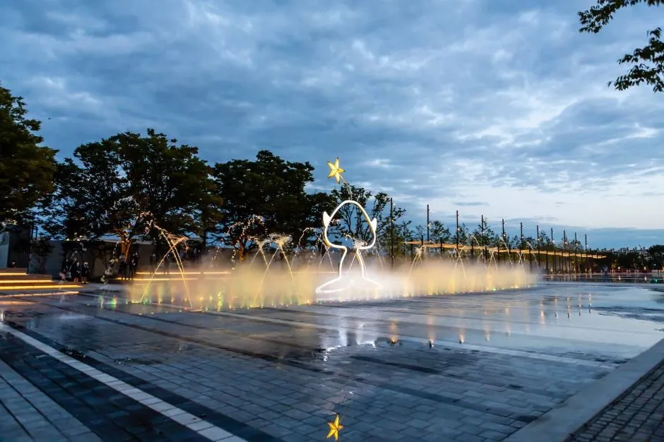
▲ 물빛광장 저녁 풍경 (평상시, 행사 사진 아님) 사진=한국관광공사
| 부스 | 빵집 | 소개된 대표 메뉴 |
|---|---|---|
| A-06 | 한스브레드 | 108겹 크루아상식빵 |
| A-07 | 성심당 | 애플브리치즈샌드위치, 무화과롤, 야끼소바빵 |
| A-08 | 버터포인트 | 명란감자소금빵 |
| A-09 | 하레하레 | 마시멜로우쑥가또, 하레치즈 |
| A-11 | 르뺑99-1 | 명란바게트 |
| A-15 | 잼살롱 | 청양고추토마토잼 |
| A-19 | 빵앗간 | 맘모스빵 |
| A-26 / A-27 | 버터컵 / 요이그 베이글 | 카이막소금빵 / 소금버터베이글 |
국제뉴스는 A존이 28개 빵집이라고 소개했고, 위키트리는 A존을 30곳으로 집계했다. 숫자가 다른 이유는 확인하지 못했다. 소금빵을 대표 메뉴로 내건 곳이 20곳, 에그타르트 판매처가 12곳이라는 위키트리 분석도 있다. B존 20곳은 국제뉴스·비건뉴스 라인업 보도 기준으로 파이가든·푸우딩·조아유즈·베이커리설래·인터뷰베이커리·키키오븐·에코브레드하우스·오늘의빵집·카페누룽지·블라썸케이크·앙금엉금케이크·오븐브라더스·언니네빵집·원두집·신라당·이프리·다인·안가네대추빵·역전빵·커피노리다. 푸우딩은 B존 소속으로 커피푸딩·초코푸딩을 내놓는다고 소개됐다.
작년 배치도를 기억하는 방문객은 주의가 필요하다. 대전관광공사가 공개한 2025년 라인업(대전잇슈)에서 성심당은 B존 28번, 한스브레드는 C존 6번, 파이가든은 E존 2번이었다. 올해는 성심당 A-07, 한스브레드 A-06, 파이가든 B존으로 존이 바뀌었다. 존·부스 번호는 해마다 새로 배정되므로 올해 라인업 이미지로 다시 확인해야 한다.
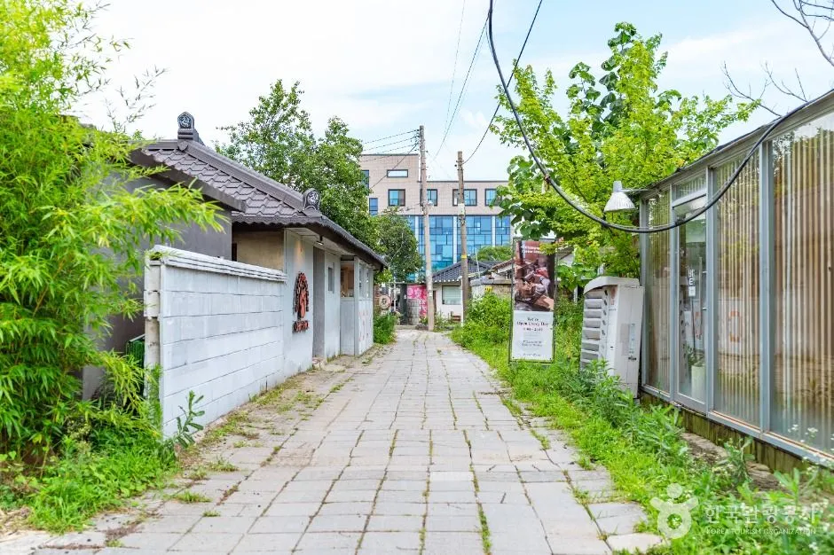
▲ 작년까지 빵축제가 열린 동구 소제동의 평상시 골목 (한국관광공사 사진, 행사 사진 아님) 사진=한국관광공사
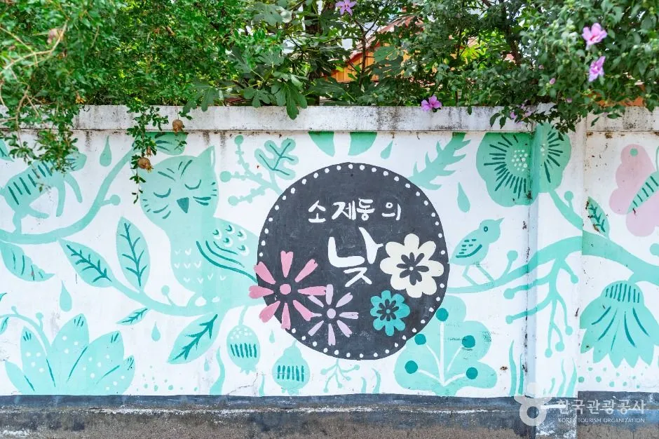
▲ 소제동 골목의 벽화 (평상시 촬영, 행사 사진 아님) 사진=한국관광공사
3. 자가용은 어디에 세울까 — 엑스포과학공원 주차장 요금·제한 정리
대전관광공사 엑스포과학공원 이용안내에 따르면 공원 주차장 요금은 30분 이내 무료, 30분 초과 시 15분당 500원, 1일 최대 10,000원이다. 후불 정산이며 카드 결제만 가능(현금 불가), QR코드 사전결제를 이용하면 출차가 빠르다고 안내돼 있다. 국가유공자·장애인·경형·하이브리드 차량은 50% 할인이다.
| 체류 시간 | 계산 | 예상 요금 |
|---|---|---|
| 30분 | 30분 이내 무료 | 0원 |
| 2시간 | 30분 무료 후 1시간 30분 = 6구간 × 500원 | 3,000원 |
| 4시간 | 30분 무료 후 3시간 30분 = 14구간 × 500원 | 7,000원 |
| 8시간(13:00~21:00 전 구간) | 7시간 30분 = 30구간 × 500원 = 15,000원 → 1일 상한 적용 | 10,000원 |
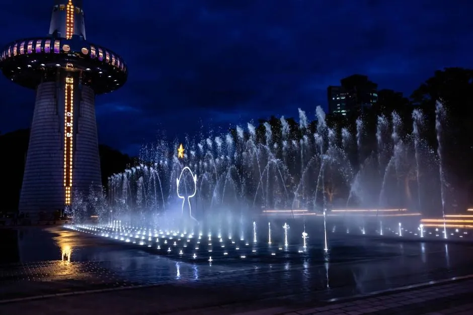
▲ 한빛탑과 분수가 조명에 밝혀진 야간 (평상시) 사진=한국관광공사
📍 공식 안내상 입장 제한 차량
같은 이용안내에는 15인승 이상 차량 출입금지, 캠핑카·카라반·트레일러 주차 및 출입금지가 명시돼 있다. 단체 방문 때 대형 승합·전세버스나 캠핑카로 가면 공원 주차장에 들어갈 수 없을 수 있다. 축제 기간에 예외가 적용되는지는 확인하지 못했으니 엑스포과학공원 안내(042-250-1115, 안내시간 09:30~17:30)로 문의하자.
엑스포과학공원 주차장 안내 페이지와 대전관광공사 공지사항 게시판(10월 1일 확인)에는 축제 기간용 임시주차장·무료 셔틀·교통통제 공지가 없다. 게시판의 빵축제 관련 글은 8월 3일자 참가업체 모집 공고뿐이고, 공원 관련 최신 공지는 10월 3~4일 음악분수 운영 중단 안내(9월 30일자)다. 행사 측은 "주변 도로와 주차장의 극심한 혼잡이 예상된다"며 대중교통 이용을 권장했다(국제뉴스 보도). 인근 대전컨벤션센터(DCC)·국립중앙과학관 주차장이 있다는 설명이 일부 매체에 나오지만, 이들 주차장을 축제 방문객에게 개방한다는 공식 공지는 확인하지 못했다. 내비게이션은 "엑스포과학공원 한빛탑"으로 설정하되, 행사 당일 교통통제와 우회로는 현장 안내를 따라야 한다.
| 주차장 | 요금 | 운영·제한 | 비고 |
|---|---|---|---|
| 엑스포과학공원 (대덕대로 480) | 30분 무료, 이후 15분당 500원, 1일 최대 10,000원 | 카드 결제만, 15인승 이상·캠핑카 출입 불가 | 축제장 바로 옆. 하이브리드·경형 50% 할인 |
| 국립중앙과학관 (대덕대로 481) | 소형 4,000원(5시간 이내), 초과 시 30분당 500원 | 운영 09:00~18:00, 568면(일반 502·대형 48·친환경 13). 1월 1일·설날·추석 당일 미운영 | 과학관 방문객용. 축제 방문객 개방 여부 미확인 |
| 대전컨벤션센터 DCC (엑스포로 107) | 확인 못 함 | 확인 못 함 | 개방 여부 미확인 (위치는 한국관광공사 자료) |
두 주차장의 5시간 체류 요금을 직접 계산해 비교하면, 엑스포과학공원은 30분 무료 뒤 4시간 30분 = 18구간 × 500원 = 9,000원이고 국립중앙과학관은 4,000원이다. 과학관 관람을 겸하는 방문객에게는 후자가 유리해 보이지만, 과학관 주차장은 18:00에 닫는다. 21:00 폐막까지 있을 차량이 세워두기에는 맞지 않으며, 야간 연장 운영이 있는지는 확인하지 못했다(운영시간 외 입차·출차 가능 여부도 미확인). 과학관 주차 정책은 국립중앙과학관 위치·주차 안내 바로가기에서 확인할 수 있다.
엑스포과학공원 주차 요금·운영 안내는 대전관광공사 공식 페이지에서 확인 가능하다. 대전관광공사 엑스포과학공원 안내 바로가기
축제 직전 임시주차장·교통통제 공지가 올라오는지는 대전관광공사 공지사항과 빵축제 공식 인스타그램에서 확인할 수 있다. 대전관광공사 공지사항 바로가기 빵축제 공식 인스타그램 바로가기
4. 차를 두고 온다면 — 2층 순환버스·관광열차·지하철 접근
대전시는 가을 축제 기간 야간관광 교통편을 확대한다고 밝혔다(충청매일 2026-09-20 보도). 그중 빵축제와 가장 직접 닿는 것이 D-유니버스 2층 순환버스다.
| 수단 | 내용 |
|---|---|
| D-유니버스 2층 순환버스 | 대전역 동광장 → 한밭수목원 → 엑스포과학공원 물빛광장. 9월 18일~11월 15일 금·토·일(추석 연휴 제외, 24일), 17:30~22:30 1시간 간격 5회. 요금 현금 1,000원(미취학·65세 이상 무료). 카드 결제 가능 여부는 확인 못 함 |
| 낮 시간 증편 | 10월 16일~11월 8일(빵축제·국제와인EXPO 기간) 11:00~21:30, 하루 8회 (충청매일·대전일보 등 대전시 보도 기준). 서울신문 등 일부 매체는 증편일을 빵축제 10월 16~17일, 와인EXPO 11월 1~8일로 달리 적었다. 이 경우 빵축제 둘째 날인 18일(일)의 낮 증편 여부가 갈리므로 대전시 야간관광 공식 계정(@light_daejeon)에서 확인해야 한다 |
| 관광열차 | 10월 17일(빵축제), 11월 6일(와인엑스포) 2회 운행. 회당 250명(총 500명), 수도권 방문객 대상. 열차와 연계버스로 축제장·야간 명소를 도는 방식으로 대전시 보도에 소개됐고(팔도장터 관광열차 연계 표기), 코레일관광개발 여행몰에서 예약한다. 코레일관광개발 10월 기획전에도 '대전 빵축제' 연계 상품이 포함됐다(한국철도일보). 운행 구간·요금은 보도에 공개되지 않아 확인하지 못했다 |
| 지하철 1호선 | 유성온천역 1번 출구에서 도보 약 800m, 또는 정부청사역 3번 출구에서 301번 버스 환승 (여행 안내 사이트 기준 · 2차 출처, 공식 확인 못 함) |
| 시내버스 | "엑스포과학공원" 정류장 하차. 대전 생활정보 사이트 '리빙인대전'은 5·301·318·606·918번을, 다른 안내 글은 104·106번을 적었다(모두 2차 출처, 노선 개편 가능). 정부청사역에서 618번 환승 후 도보 4분이라는 안내도 공식 확인 못 함. 최신 노선은 대전시 버스노선 조회 바로가기(대전관광공사 안내 페이지가 연결한 공식 조회 서비스) |
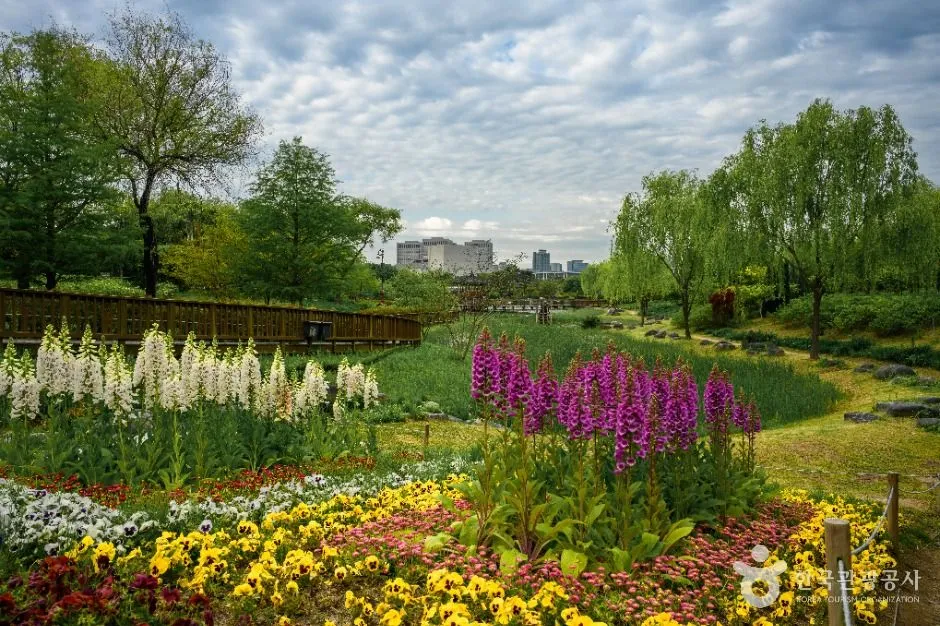
▲ 순환버스 정차지인 한밭수목원의 꽃밭과 수변 풍경 (평상시 촬영, 행사 사진 아님) 사진=한국관광공사
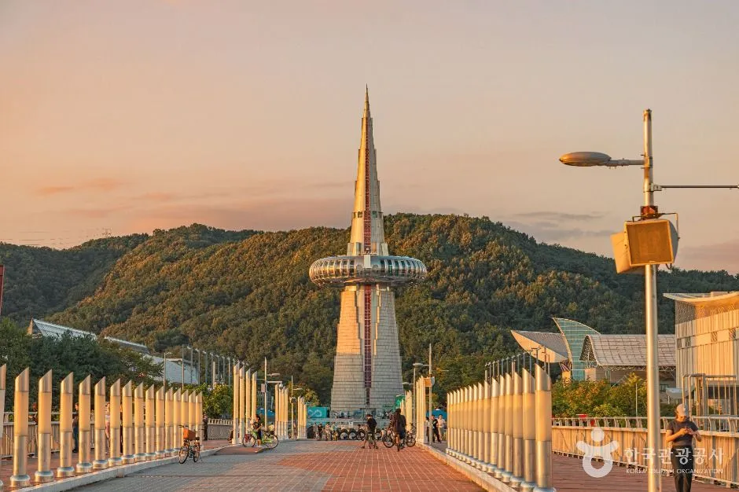
▲ 보행교에서 바라본 한빛탑 (평상시) 사진=한국관광공사
✅ 순환버스 이용 때 따질 점
· 2021년 충청투데이 보도는 대전역에서 대전컨벤션센터(DCC)까지 직행 버스가 없어 최소 환승 기준 약 48분이 걸린다고 전했다(DCC 기준, 5년 전 수치라 지금과 다를 수 있다). 대전역 도착이 행사장 도착은 아니니 순환버스 시간표를 먼저 확인하자.
· 평상시 야간 운행은 17:30~22:30 1시간 간격 5회, 증편 기간은 11:00~21:30 하루 8회로 보도됐다. 증편 기간의 정확한 간격과 마지막 출발 시각은 공개되지 않아 막차 시각은 확인 못 함이다. 폐막(21:00) 직후 귀가를 순환버스에만 의존하는 계획은 피하자(추정).
· 증편 시간표가 폐막 시간과 어떻게 맞물리는지도 확인 못 함.
5. 오후 1시 전에 가면 빵부터 살 수 있을까 — 도착·구매 전략(추정)
이 절의 전략은 공식 안내가 아니라 보도·안내 글을 바탕으로 한 추정이다. 사실로 확인된 것은 개장이 13:00이라 오전에 도착해도 부스를 일찍 이용할 수 없다는 점이다. 대기 시간이나 소진 속도는 올해 공식 수치가 없다. 작년 방문객이 16만 8천 명(코리아데일리)이었고 올해 참여 빵집이 늘어난 만큼 인기 부스에는 줄이 예상된다는 정도로 짐작할 뿐이다.
| 도착 시간 | 예상되는 장단점 (추정) |
|---|---|
| 12:00 전후 | 개장 직전 주차·입장 줄을 피하기 어렵고, 개장 직후 인기 빵집부터 줄이 생길 수 있다. 대신 소진 걱정은 가장 적다 |
| 14:00~17:00 | 방문객이 가장 몰릴 시간대로 추정. 주차장 포화와 출차 대기를 감안해야 한다 |
| 17:00 이후 | 한빛탑·물빛광장 야간 조명을 함께 볼 수 있으나, 인기 메뉴는 현장 재고에 따라 소진될 수 있다(안내 글 공통 언급) |
- 부스 번호부터 확인: 행사 측은 가고 싶은 매장의 부스 번호와 대표 메뉴를 미리 확인해 두라고 안내했다. 성심당은 A-07이다.
- 목표 2~3곳만 먼저: 안내 글은 꼭 사고 싶은 곳을 정한 뒤 나머지는 현장에서 고르라고 권한다.
- 보냉 준비: 크림이 든 빵을 살 계획이면 보냉백이 필요하다는 안내가 있다. 트렁크가 있는 자가용 방문객에게는 이 점이 오히려 장점이다.
- 결제 수단 여러 개: 부스별 결제 방식이 다를 수 있다는 안내가 있다. 현금 결제 가능 여부는 확인 못 함.
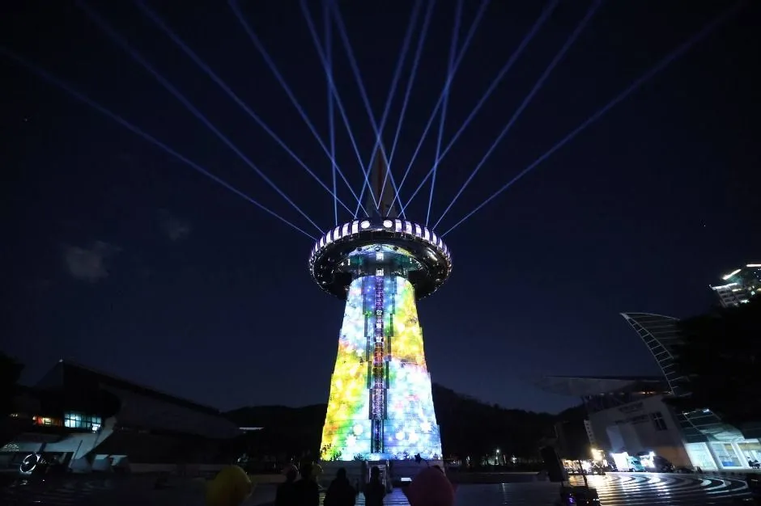
▲ 한빛탑 야간 조명 연출 (평상시 촬영) 사진=한국관광공사
6. 빵 사고 어디로? — 엑스포과학공원 주변 연계 코스
축제장이 엑스포과학공원인 만큼, 빵 구매 전후로 걸어서 연결할 수 있는 곳이 많다. 아래는 한국관광공사 TourAPI 기준 위치 정보와 대전시 보도에 나온 연계 프로그램이다. 운영시간은 행사 주말에 달라질 수 있으니 방문 전 확인이 필요하다.
| 장소 | 내용 | 비고 |
|---|---|---|
| 한빛탑 전망대 | 엑스포과학공원 상징탑, 전망대 층에서 도심·엑스포다리 조망 | 높이 93m. 09:30~17:40(전시관 매장은 21:30까지), 월요일 휴원이라 토·일은 운영. 입장 무료(2021년 6월 9일 무료 전환). 폐막까지 열려 있지는 않다 (대전관광공사 이용안내) |
| 국립중앙과학관 | 공원 바로 옆(대덕대로 481) | 매주 월요일 휴관이라 토·일 개관, 09:30~17:30. 무료관은 무료입장, 유료관은 별도 (국립중앙과학관 관람안내) |
| 한밭수목원 | 순환버스 정차 지점(서구 둔산대로 169) | 빵 구매 후 산책 후보 |
| 트래블라운지 | 유성온천역 인근 분소, 10월 개소 예정(기존 대전종합관광안내소를 재구성). 빵 사진존·휴게공간·관광상품 판매·미션 인증과 보상 수령 기능 (뉴스TNT 보도) | 개소 날짜는 확인 못 함 |
| 빵시투어 | 주말 시티투어 버스, 노선당 대표 빵집 4곳. 10월부터 노선 개편, 유성·도안 방면 코스 변경 | 10월 17~18일 축제장 경유, 이용객에게 꿈돌이 다회용 가방 제공(뉴스TNT) |
| 꿈돌이의 대전 빵 탐험대 | 10~11월 미션투어. 지역 빵집 2곳에서 구매 인증 + 관광지 방문 후 트래블라운지 분소에서 최종 인증·보상 | 참여는 10월 6일부터 홍보물 QR 코드로 (뉴스TNT) |
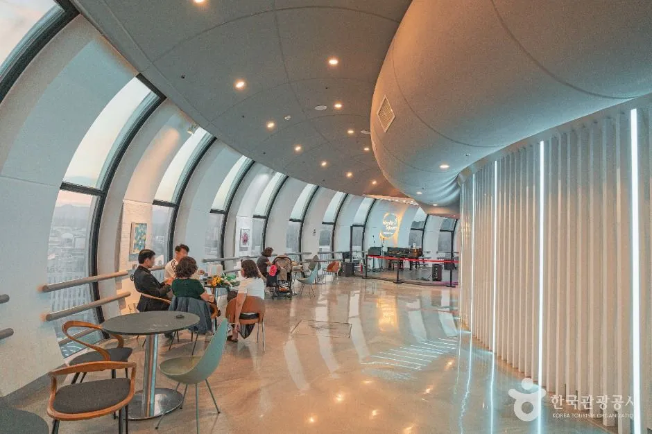
▲ 한빛탑 전망대 층 내부 사진=한국관광공사
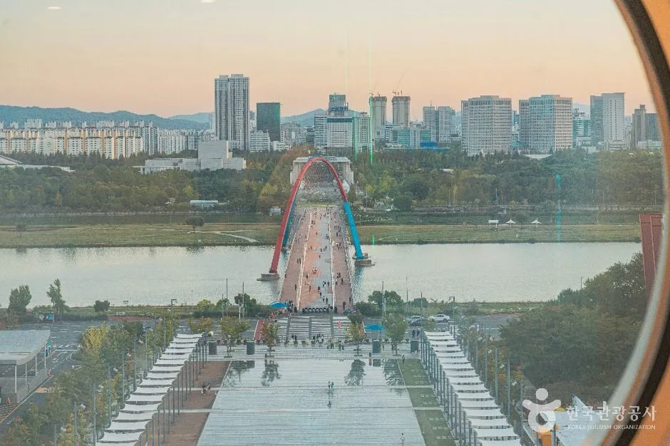
▲ 한빛탑 전망대에서 내려다본 엑스포다리 방향 전경 사진=한국관광공사
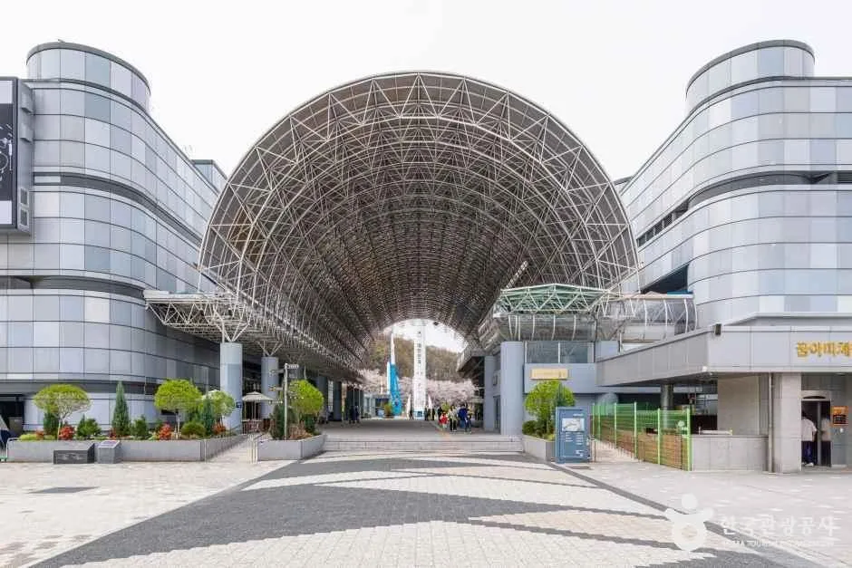
▲ 공원 바로 옆 국립중앙과학관 입구 일대 사진=한국관광공사
빵 쇼핑 뒤 성심당 본점을 들를 계획이라면 은행동 본점 주차 동선은 성심당 본점 주차 경유지 가이드를 참고할 만하다. 대전 근교 드라이브를 붙이고 싶다면 장태산자연휴양림 기사도 있다.
✅ 출발 전 체크리스트
· 개장 13:00~21:00, 오전 도착은 의미 없음
· 주차장은 카드 결제만 가능, 15인승 이상·캠핑카 출입 불가
· 행사 측은 대중교통 이용 권장 — 순환버스는 1시간 간격
· 한빛탑 전망대 17:40, 국립중앙과학관 17:30(주차장 18:00) 마감 — 낮에 먼저 방문
· 내비 목적지는 "엑스포과학공원 한빛탑"
· 전용 임시주차장·교통통제 최종안은 대전관광공사·축제 공식 SNS 공지로 직전 확인
7. 폐막 21:00 이후 귀가·출차 — 시나리오별 대안과 자주 묻는 질문
가장 막히는 시간은 입장 때보다 폐막 직후일 가능성이 크다. 공식 자료에는 출차 혼잡에 대한 예측이 없어 아래 표의 장단점은 모두 추정이고, 시각·요금처럼 공식 안내가 있는 항목만 확정으로 표시했다.
| 수단 | 확정된 정보 | 확인 못 한 점 · 추정 |
|---|---|---|
| 자가용 | 공원 주차장 QR 사전결제 시 빠른 출차 가능, 카드 결제만(대전관광공사) | 폐막 직후 출차 대기 길이는 공개 자료 없음. 인기 시간대(14~17시)에 입차했다면 출차는 더 늦을 수 있다(추정) |
| 순환버스 | 평상시 17:30~22:30 운행, 증편 기간 11:00~21:30 8회 | 막차·마지막 출발 시각 미공개 |
| 지하철 1호선 | 유성온천역 도보 약 800m (2차 출처) | 당일 막차 시각·심야 도보 동선 미확인 |
| 택시·호출 | — | 폐막 시간대 수요 집중과 배차 지연이 예상됨(추정) |
| 관광열차(17일) | 수도권 방문객 대상, 연계버스 이용 | 귀가 열차 시각 미공개 |
하이브리드나 전기차는 주차 혜택이 있나요?
대전관광공사 안내상 하이브리드·경형 자동차는 주차요금 50% 할인이다(국가유공자·장애인 자동차 포함). 전기차 할인이나 전기차 충전 시설 안내는 해당 페이지에서 확인하지 못했다.
순환버스 요금은 카드로 낼 수 있나요?
보도는 요금을 "현금 1,000원"으로 적었다. 카드·교통카드 결제 가능 여부는 확인하지 못했으니 잔돈을 준비하는 편이 안전하다(추정).
오전에 도착해서 주변을 먼저 돌아봐도 되나요?
가능하지만 요금에 유의해야 한다. 평상시 요금 기준으로 오전 10시에 입차해 21시에 나가면 11시간 체류라 1일 최대 10,000원이 적용된다. 한빛탑 전망대(17:40까지)·국립중앙과학관(17:30까지)은 낮 시간에 먼저 둘러보고, 폐막 시간대에는 조명과 분수 구간을 즐기는 순서가 현실적이다(필자 제안).
15인승 이상 승합차나 캠핑카로 가도 되나요?
공원 주차장은 15인승 이상 차량과 캠핑카·카라반·트레일러 출입이 금지돼 있다. 축제 기간 예외 적용은 공지가 없었으니, 단체라면 순환버스나 관광열차 같은 대안이 필요하다.
8. 요약
2026 대전 빵축제는 10월 17~18일 13:00~21:00, 엑스포과학공원 한빛탑 일원에서 입장 무료로 열리고 120개 빵집이 참여한다. "17일간 40억 대빵축제"는 올해가 아니라 2027년 확대 구상이며, 올해 본행사는 이틀이다.
자가용이라면 공원 주차장은 30분 무료·15분당 500원·1일 최대 10,000원(카드 결제만)이지만, 행사 측이 극심한 혼잡을 예상하며 대중교통을 권장했다. 대전역~한밭수목원~물빛광장 2층 순환버스(1,000원)가 10월 16일부터 낮 시간 증편되고 17일에는 관광열차도 운행된다. 축제 기간 전용 임시주차장·셔틀·교통통제 공지는 10월 1일 기준 없었고, 인근 국립중앙과학관 주차장(소형 4,000원·5시간 이내)은 18:00에 닫는다. 한빛탑은 17:40까지라 낮에 올라가야 하며, 장소 이전 사유는 대동천 일대 공사 문제 등으로 보도됐다.